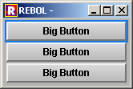
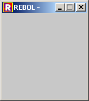
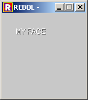
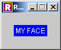
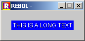
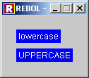
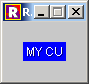

VID Extension Kit Internals
Author: Henrik Mikael Kristensen
Version: 0.0.3
Date: 12-Sep-2009
Contents:
IntroductionStyle Groups
Faces
Faces vs. Styles
Anatomy of a Style
Writing a Style
Ways of Making Styles
Creating new Base Styles
Deriving from Existing Styles
Flags
Face Accessors
Constructs
Introduction
If you are a style developer or want to learn more about the internals of the VID Extension Kit, this document is for you. It also applies, if you are a student of the standard VID, and want to know the internals of that, without resorting to the rather large VID Extension Kit.
The VID Extension Kit is basically divided in multiple parts:
- The name of the kit, comes from that it is an extension of VID, the large system object, that comprises the majority of the functionality of VID. It also describes the base face, vid-face, which has been significantly extended in this version of VID.
- The core set of functions are written as a set of helper functions that work either on the window, the pane or the face. Some functions are helpful to the end user, while others are intermediate helpers for internal functionality.
- The styles are grouped in multiple files in a separate source directory. They build the array of styles you see in the layout. It helps to see them as the building blocks of VID.
- The contexts, which offers deep functionality to specific parts of VID, where necessary:
CTX-TEXT is for text editing in all fields and areas. CTX-SCROLL helps manage scrollers and the panels they scroll. CTX-LIST extends the capabilities of various list styles with filtering and sorting.
- Resources, such as the image stock and skin information.
- The maintenance and build scripts for VID.
Style Groups
Some styles are singular, while others are derived through several other styles. As such, some styles appear very useful and concrete, while others appear abstract and useless. Therefore it's practical to divide styles into groups, to make sure you know where the one you are looking at, belongs.
In defining this division, it's helpful to look at who needs to use the style
Each style can be said to belong to a specific group:
Base These styles are not meant for the end user. Data Styles that only provide control and are otherwise invisible to the end user.
Faces
Faces vs. Styles
Notice the difference when talking faces and styles: A style is the prototype, as created with the stylize function, whereas the face is the instance of a style in the VID layout. In VID, however, styles are only referred to in system/view/vid/vid-styles and the stylize function itself.
Anatomy of a Style
In VID, a style has always been a base object located at system/view/vid/vid-face. This face is the one that we derive all styles from. In View, there is also a face, a simpler one, usable for working with View directly, in cases where you want to entirely replace the VID model, such as with RebGUI.
For the VID Extension Kit, it was necessary to add new words to the object, to facilitate face-oriented enhancements. These are all mentioned in this section.
It should be mentioned that many styles in VID are using face words rather frivolously. As such, some words are rarely used, while others are not designed for particularly useful tasks. These words are not removed from vid-face in case of compatibility problems.
The list of words in a vid-face:
state
This contains information on a state of a button.
setup
A block used during layout time for complex faces that require numerous settings to be made in the layout block. This is necessary for lists, that by design have many settings.
access
This is the "gateway" to manipulating the face from the outside. Using SET-FACE, GET-FACE and many other functions, they call functions, stored in an object that resides in this word.
style
This is the word name of the style. If the style is a button, the content of this word, would be 'button.
action
This is the action usually performed by the face when clicking on it. In some styles, like panel, it's used to store the internal layout of the panel, until it's converted to a face tree within its init block.
alt-action
This is the alternative action, usually performed when right-clicking the face.
real-size
This is the perceived size of the face, as seen from VID's resize system. It's necessary to use in cases where the size is clipped at zero, when downward resizing occurs. This value can be a negative and positive pair!.
This word is solely managed by the resize system and should not be touched by the style designer or end-user.
size
This is the actual size of the face as used by VID. it clips at zero and thus this value can only be a positive pair!.
offset
The offset in relation to the parent-face.
facets
These are the face attributes as they will be parsed by the layout engine.
related
This is a relational tag, used to relate multiple faces, such as radio buttons that need to work together.
words
These are keywords defined for the specific style, for use in the layout block. They are parsed during layout and are usually mapped to functions that move the input data to specific words in the face.
colors
When a style uses multiple colors, such as for selected/non-selected appearance, they are stored in a block under this word. With the VID Extension Kit, it's highly advisable to use the color selection available in system/view/vid/vid-colors.
texts
Contains alternate texts for the style.
images
Contains alternate images for the style. The IMAGES style will contain images here that can be swapped between.
file
In case the style needs to access a file or a URL. This is not used very much.
var
This is the word that is set during layout, when a set-word! is attached to the face. You can set this word independently as well to identify the style. In that case, no global word will be set with that word.
keycode
The key and optional shortcut that should be pressed for the face.
reset
This is similar to default value, but is used very little and does not adhere to the accessor principle as used in the VID Extension Kit.
styles
These are the styles used in the pane of the face.
data
An often used container for data storage to be set with set-face and retrieved with get-face.
dirty?
This is a flag used by the text system to determine whether a face has been edited. If so, this flag is set.
help
Optional help string for later use.
user-data
This was considered an early extension of VID, however it is never used.
flags
The list of flags for each face (a block of words), is very important to the VID Extension Kit. It helps to identify various faces in order to provide face validation, tab completion, focusing and data setting and retrieval from windows.
edge
This defines the edge of the face using an object, which is defined by standard in face/edge.
font
This defines the font of the face using an object, which is defined by standard in face/font.
doc
This is an object that briefly documents the style, its input values and what it can do.
options
This is used in case the face will be used as a popup.
saved-feel
This is a stored feel object, used during situations where the face must have its feel replaced. This is set using the save-feel function.
saved-font
This is a stored font object, used during situations where the face must use a different font object, such as when it's disabled.
saved-para
This is a stored para object, used during situations where the face must have its para object replaced.
saved-flags
This is a stored flags block, used during situations, where flags are significantly altered, making it necessary to store them for later retrieval.
old-value
This stores an old value from a field. In case you press Escape, the field would be restored to its original value. This is currently not functioning, due to the need of a stronger undo system.
default
The default value for the face is set normally using reset-face.
origin
The origin specifices where the resize system should place a child face, when it needs to align it near one of the edges of this face. Earlier this was only defined in the layout block, but since we need to right align faces with the resize system, it's necessary to keep it in the face as well.
global-offset
This is the offset of the face in relation to the window. It's calculated inside the resizing system and should not be touched by the user. It's used in cases where it's necessary to relate global mouse cursor positions to the face.
tags
This is a block of freely defined words. In contrast to flags, the tags are used to group styles for cataloguing, not directly used in layout.
fill
Sets the fill during layout time. Horizontally and/or vertically, you can decide whether the face should adhere to its internally set size or whether it should fill to the bottom and/or right edge the parent face. This feature is used by the resizing system.
spring
Sets springs for resizing for the face. The input is a block of words top, bottom, left and/or right. This feature is used by the resizing system.
align
Aligns the face during layout. The input is a block of words top, bottom, left, right or center. This feature is used by the resizing system.
fixed-aspect
A flag to set whether the face is a fixed aspect face. When set, the resizing system will attempt to keep the aspect ratio of the face to that set in aspect-ratio. This feature is used by the resizing system.
aspect-ratio
Internally, the aspect ratio for a fixed aspect style is stored as a decimal! value calculated by the y-size divided by the x-size of the face.
level
This describes the face level, where the window level is 0. Moving inward increases the level. This is conveniently set using the set-parent-faces during layout.
pos
This describes the position in a list, if the face is used in a grid in a list, usually as part of an iterated face. The value is either an integer! or a pair!.
text
The visually rendered text in the face.
init
Used only once during layout, this highly important block is evaluated when the face is prepared. It usually contains program code to set default size and other settings for the style.
valid
When in use, this contains a validation object with an action, result and requirement information, pertaining to the face during validation.
multi
These are datatype oriented facet handlers stored in a context. They are used when a specific datatype is encountered in the layout without a keyword. For example a button with an action would be processed by a function in the multi context to transfer that block somewhere in the face, in this case to the action word.
blinker
State variable for blinking faces.
min-size
This is the minimum size of the face. As of now, this is not yet utilized by the resizing system, since there is no way to automatically calculate the minimum size of the layout.
max-size
This is the maximum size of the face. As of now, this is not yet utilized by the resizing system.
pane-size
This is the size of the pane in the face. Often during initialization, it's necessary to store a temporary pane size, which afterwards is used to set the size of the face.
Writing a Style
Writing a style is a simple task, as long as you know how VID works, when layout does its job and how the event system works against the feel object in your style.
The standard VID styles were written a long time ago and they were written sparsely and condensed into one source file. Wherever resources were needed, the standard contexts that lurk in the background step in, and perform deeper operations, like provide feels or text editing capabilities for a style.
As such, a standard VID style can both be a marvel in simplicity to look at, but also frustrating, because it's an object, and objects in REBOL do not often show their true nature, by just looking at their contents.
Furthermore, when using the get-style function to spy on the contents of a style, you don't see where feels come from and how various parts of code is bound to various background contexts. As an example, let's take a look at the FIELD style:
get-style 'fieldThis returns an object, a face with all contexts and objects calculated in. So if you decide you want to know how text editing works in the field, you can probe the feel object:
probe get in get-style 'field 'feelSome text handling code appears. If you look closer, you'll find entries in the code, that are not present anywhere else in the face object, such as edit-text. That is because the feel object for this style is bound to the ctx-text context, which you can see like this:
? ctx-textBy using probe here, you would be probing a very large part of the system object, which is referenced in the ctx-text context; You might be watching code scrolling by for several minutes!
For a better experience, it helps to look at the original standard VID source for the styles. The original code for FIELD is more simple to look at:
FIELD: FACE 200x24 with [ color: none colors: reduce [svvc/field svvc/field-select] edge: [size: 2x2 color: svvc/bevel effect: 'ibevel] font: [color: svvc/field-font style: colors: shadow: none] para: [wrap?: off] feel: ctx-text/edit access: ctx-access/field init: [ if color [colors: reduce [color colors/2]] if not string? text [text: either text [form text][copy ""]] if not flag-face? self hide [data: text] ] flags: [field return tabbed on-unfocus input] words: [hide [new/data: copy "" flag-face new hide args]] ]Now the resources we use become clear; There is svvc, which is short for system/view/vid/vid-colors. There is ctx-text which is for text editing and ctx-access, which provides standard accessors to styles like FIELD.
Like when creating any REBOL object, the definition order is important. But the placement of the init block becomes less important, because it will not be executed until after it has been placed in the layout.

Ways of Making Styles
The official way to begin the creation of a style in the VID Extension Kit, is by using stylize/master. VID can use many different ways, and because it's so simple to derive new styles from older styles, these can be seen more as short term solutions, for programming in the small.
For example, you create a new temporary style for a layout, when creating a short form for an existing style:
view make-window [ style big-btn button 150 "Big Button" big-btn big-btn big-btn ]
The method is really useful for simplifying a layout block, but nothing more than that.
You can also use stylize and store your styles in a separate style sheet. Then you use your style sheets on a per-layout basis:
my-styles: stylize [ big-btn: button 150 "Big Button" ] view make-window [ styles my-styles big-btn big-btn big-btn ]This was to be seen as useful in cases where you need to create a bunch of styles that could be used by another developer and avoid certain name clashing. However, when using multiple stylesheets with styles that have identical names, those will be sequentially overwritten anyway.
The third way is by using stylize/master, the style becomes part of the master stylesheet, and thus becomes available in all layouts immediately, and you don't have to worry about style maintenance to make your style work where you want it. The caution shifts from worrying about using the correct stylesheet, to not silently overwriting existing styles with identical names on a global level.
stylize/master [ big-btn: button 150 "Big Button" ] view make-window [ big-btn big-btn big-btn ]As a factoid, VID3 for REBOL 3 allows only a method that is similar to stylize/master.
Notice the syntax for stylize and the style keyword in the layout block. They are nearly identical, except that in the case for stylize, you make the new style name as a set-word!, whereas during layout, the keyword style is used, followed by the style name, big-btn. Everything after that is the same.
You can use the standard keywords (facets) and input datatypes that follow a single style, but not layout words, such as pad or across.
An important word is with, which you may already have seen in layouts. with lets you provide details to the style in the same manner as you would when specifying a normal object. Any facet of the face can be altered using with, and you can run small bits of code as well.
Example:
view make-window [ button with [text: "Some Text"] ]
Creating new Base Styles
This section will detail the creation of a single style from beginning to end. We will call it S for short.
Creating a base style involves deriving a style from FACE. FACE is the lowest level style, or the one, that contains the least amount of extraneous information.
We simply begin with:
stylize/master [ s: face ]The style has been created, but it can't be used in a layout:
view make-window [s] ** Script Error: Cannot use add on none! value ** Where: forever ** Near: max-off: maximum max-off new/sizeThe Minimum Style
We have not reached the minimal level of necessary information to achieve a successful style.
The necessary components are:
size For FACE, size is none, and in layout, the face size is required, for it to create the layout. init The init block is required to be a block. For FACE, the default init is none. As a quick measure, we can set size to 100x100.
The init block is bound to the face itself, as it is created. It's important here to discern binding the init block to the face that is made, from the style that we are making here; They are two different objects. The binding is handled in the layout function.
The modified style:
stylize/master [ s: face with [ size: 100x100 init: [] ] ]At this time, the style is ready for use, but it won't look like much:
view make-window [s]
We can then add text. In View (the basic graphics engine of REBOL), text is rendered from the contents of the string stored in text, using the font object stored in font with margins and origin stored in para.
stylize/master [ s: face with [ size: 100x100 init: [] ] ]Using Init
We can now use the init block in a useful manner. We can for example give the style a basic text and manipulate it during init.
stylize/master [ s: face with [ text: "My Face" size: 100x100 init: [ text: uppercase text ] ] ]This shows that the init block is bound to the face instance, which relieves you of referring to the face itself inside the block. If you need to, the word self is used. The result should be uppercase text:

With even greater usefulness, the text can be used to resize the face to fit around the text. This can be done using the size-text function, but here we must know that init performs its code during layout.
The function size-text requires an existing face as an input, and more importantly, identical font and para setup to work properly. The best method is to set up the face itself so it gets a very large width, to avoid the text wrapping in the face. We can do this without wasting much memory, in that nothing is displayed for this operation.
The init block will appear as so:
init: [ text: uppercase text size/x: 1000 size: size-text self ]To make the face more visible, we can set color to blue:
stylize/master [ s: face with [ text: "My Face" size: 100x100 color: blue init: [ text: uppercase text size/x: 1000 size: size-text self ] ] ]The result, after layout:
There is not enough room for the text! The size needs to take the font offset as well as the paragraph origin into account:
init: [ text: uppercase text size/x: 1000 size: size-text self size: size + font/offset + para/origin ]
User Defined Text
Next we want the text to be alterable by the user using a text string in the layout block:
view make-window [s "This is a long text"]
Facets without Keywords
It already works! But why does it work? This is because text is a standard facet for this style. This particular facet is only represented by its datatype, and layout detects this as a string!.
We haven't done anything, but what we haven't seen yet, is that FACE provides a standard facet gathering object, called multi, which is short for multi-facet. This object consists of a range of functions that each are called, during layout (inside a function called grow-facets). It is used, when the facet is represented only by the datatype.
We can have a look at the mechanism in multi, that makes sure the user defined text ends up in the right place:
probe get in get in get-style 's 'multi 'text == func [face blk] [ if pick blk 1 [ face/text: first blk face/texts: copy blk ] ]The input is the face itself and a block!. Basically, facets of the same datatype can occur multiple times, and multi can handle them.
The layout function first gathers all facets that are not attached to key-words. As standard these are:
texts pairs files images colors blocksAs such, when you enter a string! in the layout block, it is parsed in grow-facets and placed in texts.
Then grow-facets calls each multi function sequentially, and applies the facets to the face. In this case, the text "This is a long text", goes through that intricate route from the layout block into the face.
Facets are collected and ready for you, prior to the execution of the init block.
Facets with Keywords
Facets with keywords allows for more flexibility and readability for special inputs. The facets mentioned in the beginning of the VID Extension Kit manual are all of this type. This type of data assembly usually refers to special storages in the face, but they can be standard.
In the FIELD for example, you can specify an integer keyword. This will set the word integer to true in the face, which will in turn alter the behavior of its accessors set-face* and get-face* to provide numeric functionality instead of using strings.
Basically, they are written as words optionally followed by any type.
There are two subsets of facets with keywords:
Standard facets with keywords the built in keywords, such as default, setup, font, edge, etc. Custom facets with keywords these are keywords defined in the words block in the style. They are processed in the same way as standard facets with keywords. To use custom keywords, we can extend the style again with a words block. We can, for example, specify that the text in the style, should only be uppercased, if the keyword uppercase occurs in the layout block.
As a means to store that information, we can specify a uc word in the face, for later usage in init.
The words block has one caveat: The face specification is handled as a block of arguments, which you must sometimes move the index for. This is because, layout temporarily hands over control of the arguments block to us, so the specification for the face can be parsed in one pass. When the entire words block has been processed, the arguments block needs to be sitting at the right index.
You don't always need to move the index, but you must always return the argument block, so its index is kept up to date for the next function. If the keyword has no value associated, the argument index must skip one place. We have to do that here, because uppercase has no value argument.
The function will look like this:
func [new arg] [new/uc: true arg: next arg]The total result combines the 'uppercase lit-word! with the function in a reduced block for words. The init block has been changed to take advantage of the uc word:
stylize/master [ s: face with [ text: "My Face" size: 100x100 color: blue uc: false init: [ if uc [ text: uppercase text ] size/x: 1000 size: size-text self size: size + font/offset + para/origin ] words: reduce [ 'uppercase func [face arg] [new/uc: true arg: next arg] ] ] ]The result can be seen immediately:
view make-window [ s "lowercase" s "uppercase" uppercase ]
For sake of completeness, if we want a keyword with a value, we could create a function that specifies that the face text may only be displayed up to a certain length, although internally, we will store it at its full length. This could be a max-length keyword along with an integer! as argument.
Like before with uc, we can store the max-length in the face itself.
The words block will now appear as this:
words: reduce [ 'uppercase func [face arg] [new/uc: true arg: next arg] 'max-length func [face arg] [new/max-length: first arg arg] ]If we want to avoid destroying the text internally, we need to store it in two places. Fortunately, faces usually have a place for this in data.
The init block is altered accordingly:
init: [ if uc [ text: uppercase text ] if max-length > 0 [ data: text text: copy/part text max-length ] size/x: 1000 size: size-text self size: size + font/offset + para/origin ]We can now use it in the layout to produce layouts with maximum text lengths of 5 chars:
view make-window [ s "My custom text" uppercase max-length 5 ]
Accessors
To further allow manipulation of a style, such as by using SET-FACE to replace the text shown in the face while the face is visible, we use accessors, that are stored in the access block in the style.
Accessors are simply a formalized way of accessing the internals of a face, and in OOP circumstances, this would be similar to public functions. Since REBOL does not use the concept of public/private functions for objects, accessors are plain formal. You could just as well access the face directly like this:
view/new make-window [ t: s "My custom text" ] forever [t/text: form now/precise show t wait 0.2]But the reason for formalizing access to the face is the case where you replace the style with a different one, or you use the face in a larger array of faces, and wish to have uniform access to every single one of them. Another factor is that in the style we are building, we are handling text in ways that another developer may not be aware of. He would be forced to read the source code to your style, to make appropriate adjustments to the face, for correct behavior.
The original VID has weaknesses in that some styles do not have properly set up accessors, forcing you to access the style directly. If you are using many faces, the code can grow much more complex, rather quickly.
Using accessors, the above example might look like this:
view/new make-window [ t: s "My custom text" ] forever [set-face t now/precise wait 0.2]Note the absence of show as well as form. The style might be able to handle form internally, and show is handled in set-face.
VID comes with a lot of standard sets of accessors in the ctx-access context, and this is already set up in the face. The VID Extension Kit comes with even more accessors.
You can also define your own accessors, whatever you deem necessary to formalize any particular kind of access to the face. They can have any name you want to give them.
However there is an already existing group of accessor function names. These are given by the function name of the accessor with an additional * appended to the name. This is considered a standard naming scheme, which you can deviate from, but it's not recommended:
set-face* get-face* key-face* scroll-face* resize-face* disable-face* enable-face* setup-face*Each one of the functions can have any arguments, where the first one should start with the face itself.
If we want to manipulate the text word in the face, we could build an access function that reads:
set-face*: func [face value] [face/text: value]Note that we don't show the face here, as this is handled by set-face.
Since we have introduced a processing of the maximum length as well as uppercase for the text inside the init block, we will need to exactly the same thing here. To make this code appear only once in the style, the solution is to move the max-length, uppercase and text size calculation code inside the set-face* function, and use the set-face* function directly in the init block:
set-face*: func [face value] [ face/data: face/text if face/max-length > 0 [ face/text: copy/part face/text face/max-length ] if face/uc [ face/text: uppercase face/text ] calc-text-size self ]and:
init: [ access/set-face* self text ]We could call set-face/no-show, but using access/set-face* is a little bit faster.
An unfortunate side effect is that the face will not resize to the new text.
Since we worked so hard earlier on, to provide the correct face size for the text in the init block, this can be rectified, by creating a function calc-text-size for the style that calculates the correct face size for the given text.
In the code below, we'll add the set-face* function inside its access object, add the calc-text-size function, and alter the init block to use that function.
stylize/master [ s: face with [ text: "My Face" size: 100x100 color: blue uc: false max-length: 0 calc-text-size: func [face] [ face/size/x: 1000 face/size: size-text face face/size: face/size + face/font/offset + face/para/origin ] access: make object! [ set-face*: func [face value] [ face/data: face/text: value if face/max-length > 0 [ face/text: copy/part face/text face/max-length ] if face/uc [ face/text: uppercase face/text ] calc-text-size self ] ] init: [ access/set-face* self text ] words: reduce [ 'uppercase func [face arg] [new/uc: true arg: next arg] 'max-length func [face arg] [new/max-length: first arg arg] ] ] ]Feel
In this section, we want to delve into user input: Respond to a mouse click in the face, alter one of its properties and shwo the change.
Making the face react to mouse or keyboard input is the hardest part to understand, in that it involves the understanding of REBOL's event system, particularly caveats and limits.
The feel object consists of four standard functions that each respond to both different events and to events in different ways. If there is a specific functionality, you don't want to use, you can specify none, instead of the function.
It's necessary to explain each one in depth, before proceeding:
engage detect over redrawEngage
This is the function where you detect mouse clicks, drags and keyboard input. Keyboard input is only detected, when the face is focused. This function is the one we should use the most
Events bubble down, i.e. they move outward in the face hierarchy.
The function accepts three arguments: face, action and event.
The face is obvious, while the action is the . Event is used here to
Detect
This is an "inverted" version of engage, that works from the bottom up, i.e. events are sent inward in the face hierarchy. Detect is useful in cases, where you need to do things similarly to engage, but in a global way. For example, in the VID Extension Kit, all tab navigation events and mouse coordinate calculation events occur in a detect function in system/view/vid/window-feel and system/view/vid/pop-feel.
This also means that you must return the event itself, in order to keep the event bubbling.
Over
This function simply
The function accepts two arguments: face and action.
Redraw
Redrawing is used whenever the face needs to update its appearance. This can be for specifying a different background color when the mouse is over the face or to draw a different frame, if the mouse is clicked.
The function accepts two arguments: face and action.
This is one of those places, where it becomes a good idea to study the source in other styles, and get a good look at their feel objects.
Mouse Click Input
From the above, we can conclude that mouse click input can be achieved with the engage function:
engage: func [face act event] [ if event/type = 'down [ face/color ] ]If you are unsure of what types of events occur, and you want to play around, you can probe event/type. Probing event itself won't return any useful information:
engage: func [face act event] [ probe event/type ]Impossibilities
Some things are not possible, simply due to the sequence in which, things are done:
As init is performed during layout, you can't ask it to perform operations on adjacent faces, since they are not in place yet.
Also parent-face cannot be guaranteed to be set for the face until the entire layout is done.

Deriving from Existing Styles
The process is very much the same as for creating new styles. What can be important, is to reduce the amount of baggage that comes with the definition of a new style, based on an existing complex style.
Flags
The VID Extension Kit relies heavily on flags to produce correct results when validating faces, tabbing, disabling/enabling faces, gathering data from panels and what to do with iterated faces. It's important not to touch the face flags any longer, as doing so may lead to crashes or unpredictable behavior.
The reliance of flags is so important, that flags have been placed in a separate source file (but of course built into the vid-ext-kit.r file) and is processed separately from the styles themselves, after the styles have been created.
Style types are indicated through flags. In this documentation, if the word "TABBED style" occurs, it means the flag TABBED, is enabled for that style. Each style can have multiple flags:
TABBED The face can be tabbed to and from via keyboard navigation. It is also editable, can be enabled/disabled, and can be validated. INPUT The face content can be retrieved by GET-FACE, if its parent panel is GET-FACEd. Typically form elements in a panel would have the INPUT flag. ACTION The face can be manipulated to operate the user interface. An example would be a button that performs an action. ACTION faces can be disabled. TEXT-EDIT The face contains text editing, such as FIELD or AREA. DISABLED The face is disabled, it will be skipped during keyboard navigation, and is unclickable. A TABBED face is made not TABBED, when it's disabled. The TABBED flag is restored when the face is enabled again. PANEL This is for panels that contain other faces which content should be retrievable with GET-FACE. A panel with form elements would typically have the PANEL flag. CLOSE-FALSE This face is a window-returns-FALSE face, usually set for a single face in a window, that closes the window and returns FALSE. A "Cancel" or "No" button would be a typical example. CLOSE-TRUE This face is a window-returns-TRUE face, usually set for a single face in a window, that closes the window and returns TRUE. An "OK", "Yes" or "Use" button would be a typical example.
Face Accessors
Each face can be accessed through accessors that are built into each style. Accessors are really the way for the face to be interacting with the "world" or in some cases, other faces. The point is to encapsulate the interaction with the face, even though you can access any part of the face at any time. Using the accessors is a cleaner and more correct to interact with faces.
If you are a style developer, this is very important.
Constructs
The FACE-CONSTRUCT style provides methods for creating a face with a pane that is created at layout time in a complex way, for example by providing data as a dialect which, then sets up a pane from that dialect. It can also be from a list or any other data.
This is used to create dynamic list headers, selectors with multiple buttons, etc. The face pane can then be laid out again by using SET-FACE on the pane or the SET-FACE value can set a specific button in a selector, for instance.
The FACE-CONSTRUCT works by setting a PROCESS function:
stylize/master [ my-construct: face-construct with [ process: func [data] [ emit [across space 0] ] ] ]The input to PROCESS is the same value as used by SET-FACE.